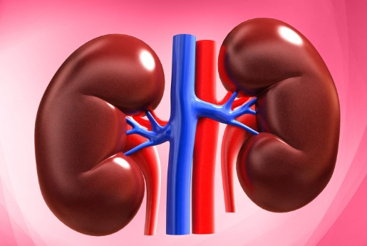
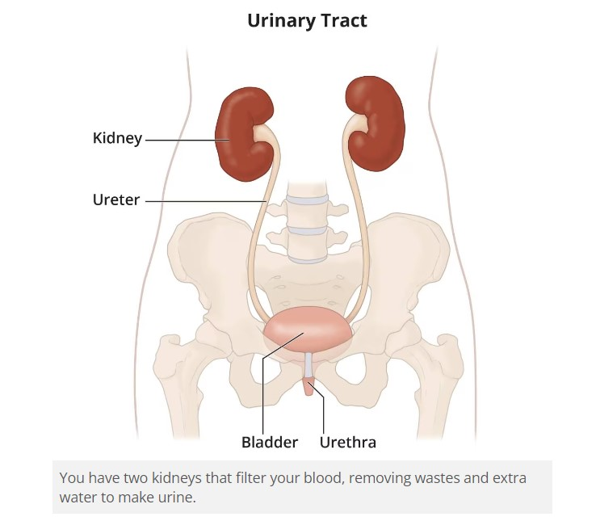
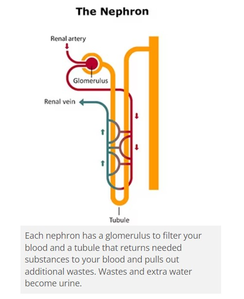
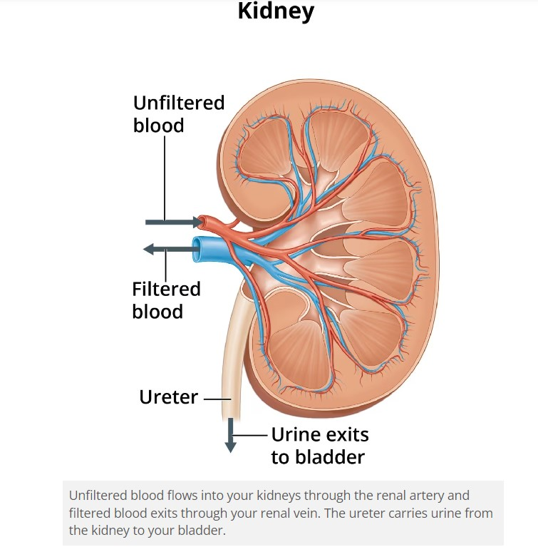

The Kidneys 
Your Kidneys & How They Work
The kidneys are two bean-shaped organs, each about the size of a fist. They are located just below the rib cage, one on each side of your spine. Healthy kidneys filter about a half cup of blood every minute, removing wastes and extra water to make urine. The urine flows from the kidneys to the bladder through two thin tubes of muscle called ureters, one on each side of your bladder. Your bladder stores urine. Your kidneys, ureters, and bladder are part of your urinary tract.
Why are the kidneys important?
Your kidneys remove wastes and extra fluid from your body. Your kidneys also remove acid that is produced by the cells of your body and maintain a healthy balance of water, salts, and minerals—such as sodium, calcium, phosphorus, and potassium—in your blood. Without this balance, nerves, muscles, and other tissues in your body may not work normally. Your kidneys also make hormones that help control your blood pressure make red blood cells NIH external link keep your bones strong and healthy Watch a video about what the kidneys do External link.
How do my kidneys work?
Each of your kidneys is made up of about a million filtering units called nephrons. Each nephron includes a filter, called the glomerulus, and a tubule. The nephrons work through a two-step process: the glomerulus filters your blood, and the tubule returns needed substances to your blood and removes wastes.
The glomerulus filters your blood
As blood flows into each nephron, it enters a cluster of tiny blood vessels—the glomerulus. The thin walls of the glomerulus allow smaller molecules, wastes, and fluid—mostly water—to pass into the tubule. Larger molecules, such as proteins and blood cells, stay in the blood vessel.
The tubule returns needed substances to your blood and removes wastes
A blood vessel runs alongside the tubule. As the filtered fluid moves along the tubule, the blood vessel reabsorbs almost all of the water, along with minerals and nutrients your body needs. The tubule helps remove excess acid from the blood. The remaining fluid and wastes in the tubule become urine.
How does blood flow through my kidneys?
Blood flows into your kidney through the renal artery. This large blood vessel branches into smaller and smaller blood vessels until the blood reaches the nephrons. In the nephron, your blood is filtered by the tiny blood vessels of the glomeruli and then flows out of your kidney through the renal vein. Your blood circulates through your kidneys many times a day. In a single day, your kidneys filter about 150 quarts of blood. Most of the water and other substances that filter through your glomeruli are returned to your blood by the tubules. Only 1 to 2 quarts become urine. Children produce less urine than adults, and the amount produced depends on their age.
Clinical Trials
The National Institute of Diabetes and Digestive and Kidney Diseases (NIDDK) and other components of the National Institutes of Health (NIH) conduct and support research into many diseases and conditions.
What are clinical trials, and are they right for you?
Clinical trials are part of clinical research and at the heart of all medical advances. Clinical trials look at new ways to prevent, detect, or treat disease. Return to previous page